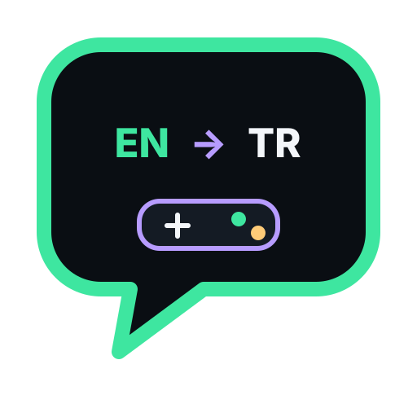
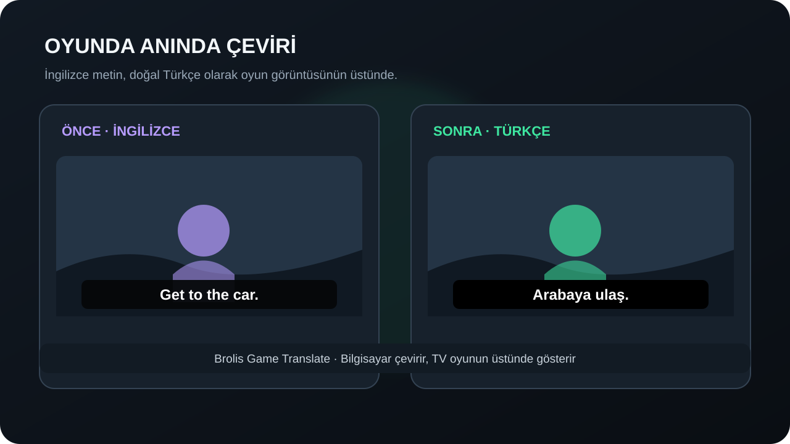
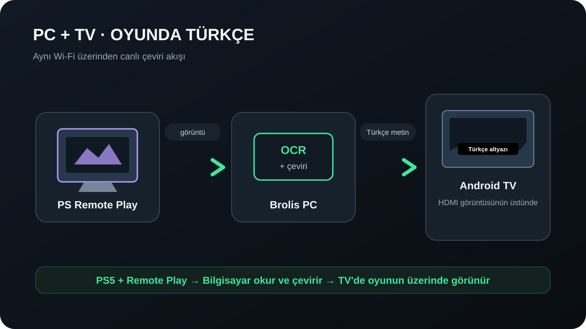

PS5'i bağla
Bilgisayarda PS Remote Play'i aç ve konsoluna bağlan.

Brolisİndir ↗OYUNUN AKIŞINI BOZMADAN
PS5 oyunlarındaki İngilizce konuşma, menü ve kontrolleri Türkçeye çevir. Türkçe yazılar TV'de oyunun tam üstünde görünür.
Windows 10/11 · Android TV / Google TV · Ücretsiz

KURULUMU KOLAY
Bilgisayarda PS Remote Play'i aç ve konsoluna bağlan.
PC uygulamasını aç. Aynı ağdaki TV uygulamasını kendisi bulur.
TV'de altyazı iznini ver; çeviri oyun görüntüsünün üstünde belirsin.

SANA GÖRE PROFİL
Genel oyun profili çoğu oyunda çalışır. Özel profiller terimleri oyuna göre uyarlar.
OYUN DIŞINDA DA
TV'nin kendi ekran yakalamasıyla desteklenen oynatıcı altyazılarını çevirebilir. Ayrıca `.srt` ve `.vtt` altyazı dosyalarını zamanlamayı koruyarak Türkçeye aktar.
Film modu hakkında →Stay close. We're almost there.
Yakın dur. Neredeyse geldik.
YARDIM
PC ve TV'nin aynı Wi-Fi ağında olduğunu ve TV'de Brolis uygulamasının açık kaldığını kontrol edin.
Oyunda altyazıları açın; PC uygulamasının çalıştığından ve TV'de ekran üstü izninin verildiğinden emin olun.
TV ana ekranında Kumandayla hizala'yı açın; oklarla konumu, OK ile boyutu ayarlayın.
Kota yenilenene kadar yerel çeviriyle devam edin. Gemini kullanımı isteğe bağlıdır.
PS Remote Play'i açıp PS5'e bağlanın; PC uygulamasında pencere listesini yenileyin.
GİZLİLİK
Yerel çeviri varsayılan seçenektir. Gemini anahtarı girerseniz çeviri için ilgili metin Google'a gönderilir.